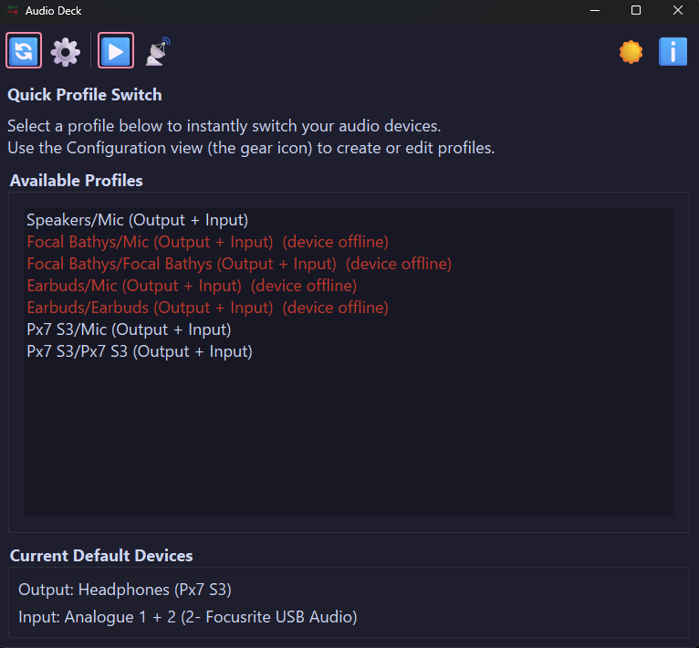

Windows 10 · 11
Your audio setup,
one click away.
Audio Deck saves named profiles that each pin a default output and input device, then switches Windows to a profile in one click, one command, or one Stream Deck button. Profiles live in a local JSON file. No account, no cloud, no background service.

Quick Switch: pick a profile and switch. Offline devices are marked and applied automatically when they reconnect.